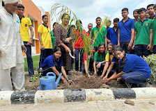
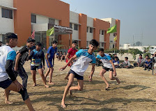
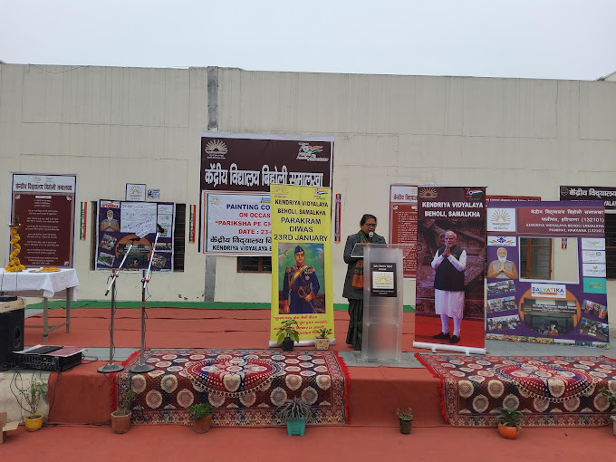
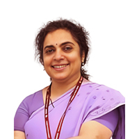
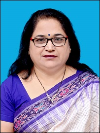

KV Code:2370,CBSE Affiliation No.:500101 CBSE
School Code:44602
An autonomous body under the Ministry of
Education,Government of India



PM Shri Kendriya Vidyalaya Beholi Samalkha,
Genesis
Kendriya Vidyalaya Beholi, tracing its roots back to its inception on October 18, 2017, emerged as a beacon of educational excellence in its nascent stages. Commencing with classes 1 through 5, the school quickly established itself as a cornerstone of quality education in the region.
Vision
Kendriya Vidyalaya Beholi envisions itself as a beacon of educational excellence, dedicated to imparting not only knowledge but also instilling essential values in its students.
Mission
At Kendriya Vidyalaya Beholi, our mission revolves around several key principles. Firstly, we are dedicated to addressing the educational requirements of children from transferable Central Government employees, including defense and paramilitary personnel, along with other transient populations.
Message

Commissioner, Nidhi Pandey, IIS
Dear Students, Teachers, and Parents,
On the momentous occasion of Foundation Day 2024 of Kendriya Vidyalaya Sangathan (KVS), I extend my heartfelt greetings to each one of you. From its humble beginnings in 1963, KVS has grown into an inspiring institution of excellence in school education. This remarkable journey continues to evolve, driven by an unwavering spirit of innovation and progress.
Varun Mitra
Deputy Commissioner
Indian sages and wise men have called knowledge (Vidya) as the means of man’s liberation. Man has desired freedom from fear, hunger, vices, bad tendencies, bad conduct, weakness, poverty and inferiority, disease, grief etc. since time immemorial. The above Mahavakya of Shri Vishnu Puran gives the message that man should strive to get freedom from all his troubles through knowledge. Knowledge is the fruit of sacrifice and penance, hence the attainment of knowledge is always hard work.

Prem Lata Samnol
Principal
APJ Abdul Kalam Azaad ji once remarked,”Teaching is a very noble profession that shapes the character, caliber and future of an individual. If the people remember me as a good teacher, that will be the biggest honour for me.” Having the same feeling in our hearts,we at Kendriya Vidyalaya,Beholi,Samalkha are putting all our efforts to contribute to our nation’s development.We endeavour to inspire our students to be life-long learners, responsible and sensitized citizens of our country.